Understanding Pathogen Tramsmission
Christopher Wetherill
TBMH 5054
Epidemic modeling
- A mathematical model that tries to describe and predict the transmission of communicable disease among individuals
- Roots in systematic cause-of-death quantification by John Gault in 1662
- Considered first introduction of “theory of competing risks”
Epidemic modeling
- First mathematical model of disease spread by David Bernoulli in 1766
- Estimated increases to life expectancy by universal smallpox vaccination
- Predated modern germ theory (i.e., completely agnostic to the pathogen itself)
Importance of epidemic modeling
Epidemics happen:
- Plague of Athens
- Black death
- 1793 Yellow Fever epidemic in Philadelphia
- First/second Asiatic cholera pandemics
- 1918 Spanish flu
Importance of epidemic modeling
Early in an outbreak, we must be able to:
- Quickly mobilize resources to areas of greatest need
- Assess most at-risk populations
- Balance need for control measures against risk of public misperception/hysteria
Any failure here can be costly in terms of financial burden, duration of the outbreak, and cost in human life and well-being!
Modern modeling: terminology
- Stochastic models
- Include some random variable or element
- Estimate probability distributions of potential outcomes
- Deterministic models
- Assign individuals to specific compartments depending on stage of disease
- Gives rise to, e.g., SIR models of disease transmission
The SIR model
- \(S(t)\) represents the population of uninfected, susceptible individuals to a disease at time \(t\)
- \(I(t)\) represents the population of infected individuals to a disease at time \(t\)
- \(R(t)\) represents the population of individuals recovered and no longer susceptible to a disease at time \(t\)
\[
S \rightarrow I \rightarrow R
\]
The SIR model
Using a fixed population \(N= S(t) + I(t) + R(t)\), we derive:
\[
\begin{eqnarray}
\frac{dS}{dt} &=& - \frac{\beta S I}{N}\\
\frac{dI}{dt} &=& \frac{\beta S I}{N} - \gamma I\\
\frac{dR}{dt} &=& \gamma I
\end{eqnarray}
\]
where \(\beta\) is the probability of contracting the disease and \(\gamma\) represents the mean recovery/death rate.
The SIR model visualized
 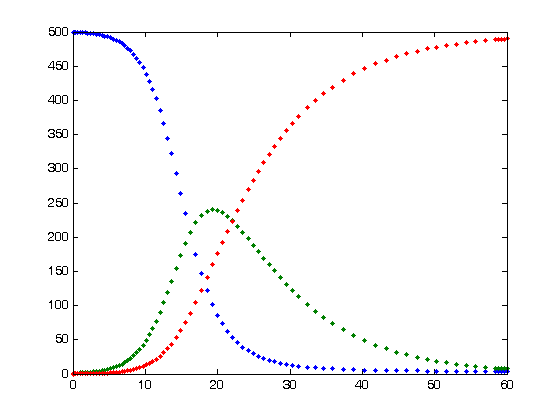
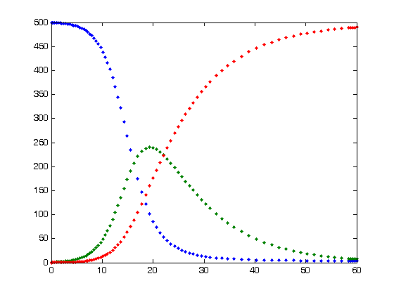
Extensions of SIR
- SIR with births/deaths
- SIS with births/deaths
- SIRS allowing recovereds to rejoin susceptibles
- S\(\epsilon\)IS for latent infection with no immunity
- S\(\epsilon\)IR for latent infection with immunity
- \(\ldots\)
Other considerations
- Non-homogenous mixing
- Vector transmission
- Vertical transmission
- Variable infectivity
- Spatially non-uniform population distributions
- Vaccine-acquired immunity
- Passive infant immunity
Extending to network epidemiology
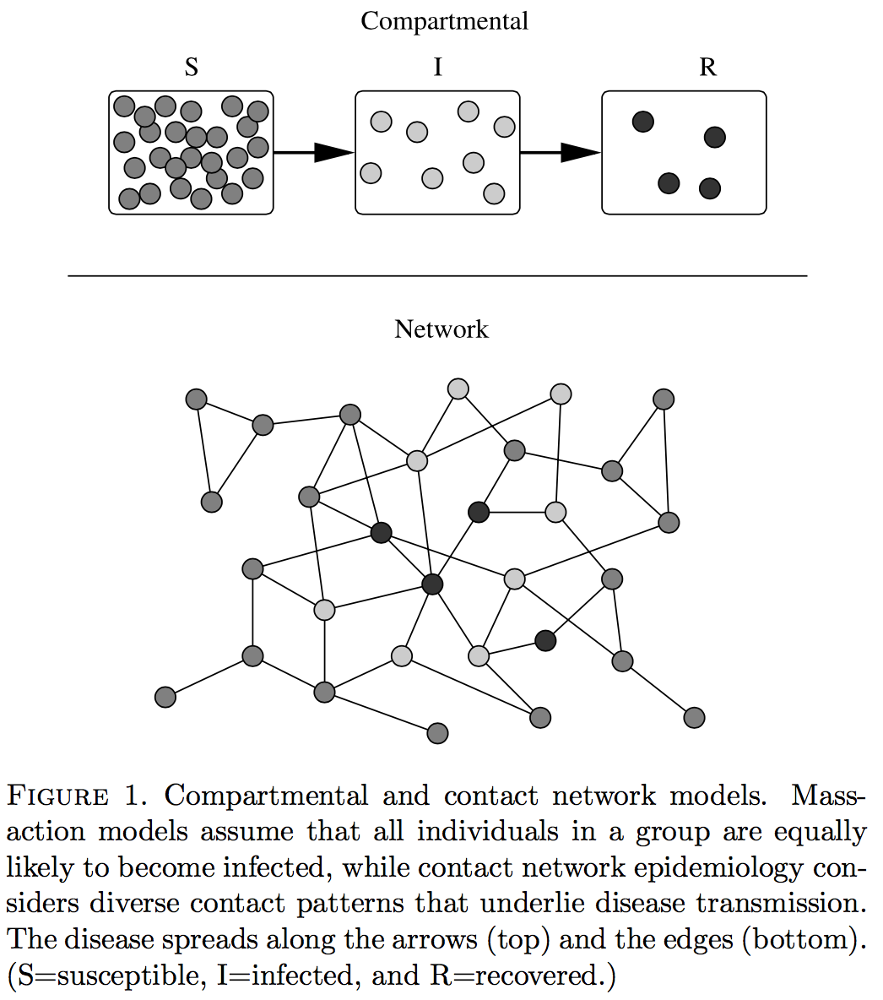
Lattice networks
- Contacts are localized in space
- Homogenized at the individual level and highly clustered
- Abstraction of the SIS model
- Generally show slower initial spread of infection
- Often appropriate when wave-like spread is observed (e.g., forest fires)
Small world networks
- Movement between two random individuals takes many steps in lattice networks; very few in random networks
- Small world networks bridge these two by adding a few random connections to a lattice network
- Fairly representative of human social networks
Scale-free networks
- Incorporates so-called “super spreaders”
- Many individuals have a small number of connections
- A small number have disproporionately many connections
- These individuals are likely going to be correspondingly important in modeling disease transmission
- Both at a higher risk of infection and at a higher risk of spreading further
So why do models fail?
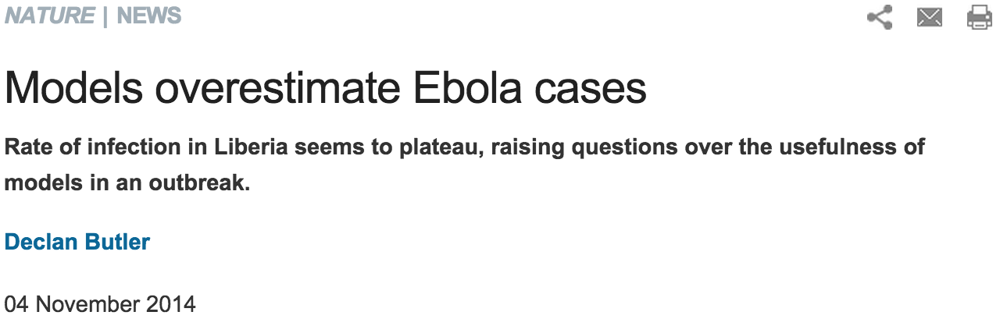
So why do models fail?
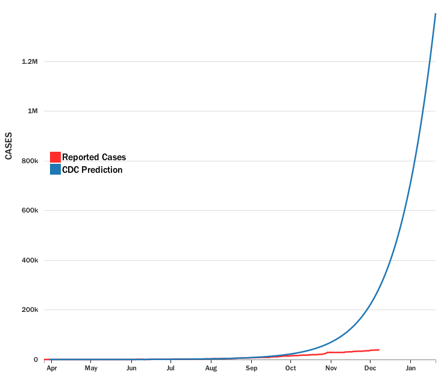
Is it a lack of data?
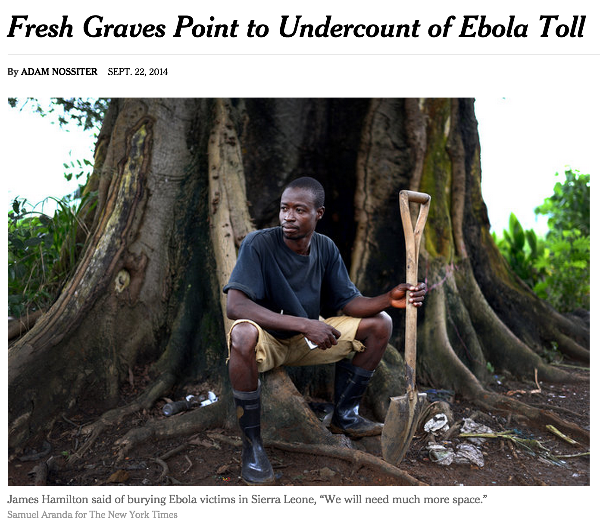
Is it a lack of data?
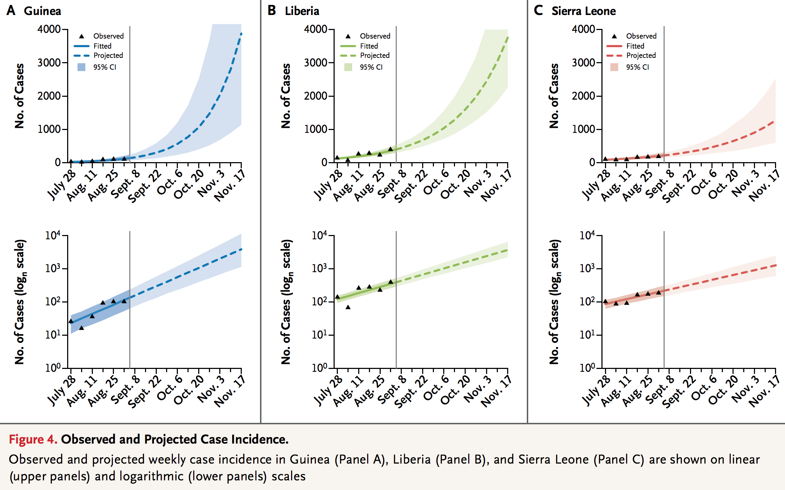
Is it a lack of data?
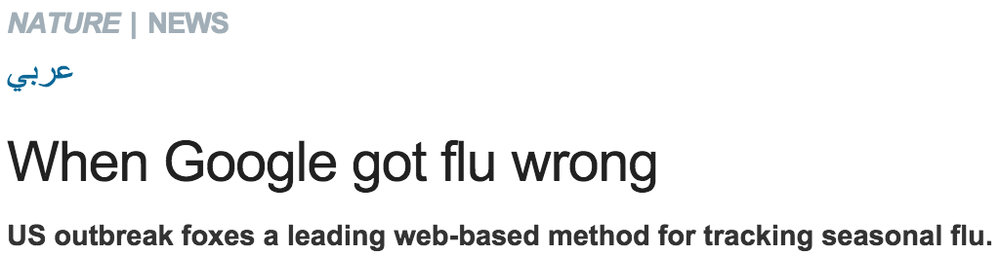
Maybe it’s our agnosticism?
- Epidemic models consider only a limited amount about the pathogen itself
- Namely, \(R_{0}\) and \(\beta\): measures of its relative ability to infect a susceptible individual
- Occasionally its period of latent infection
- Otherwise, models are concerned with host behavior
- Our contact networks
- Our susceptibility status
- Etc.
Do we need to take into account explicit virus—host interactions?
Modeling infection and replication kinetics
- Viral kinetics refers to the rate of change of virus as a function of the time postinfection
- This is described by a kinetic model—typically a set of ordinary differential equations
- Assumes that time course of infection impacts infectivity
- I.e., accounts for immune system interactions; target cell limitation; periods of latency, infectivity; interactions with antivirals; etc.
Influenza A kinetics: An example
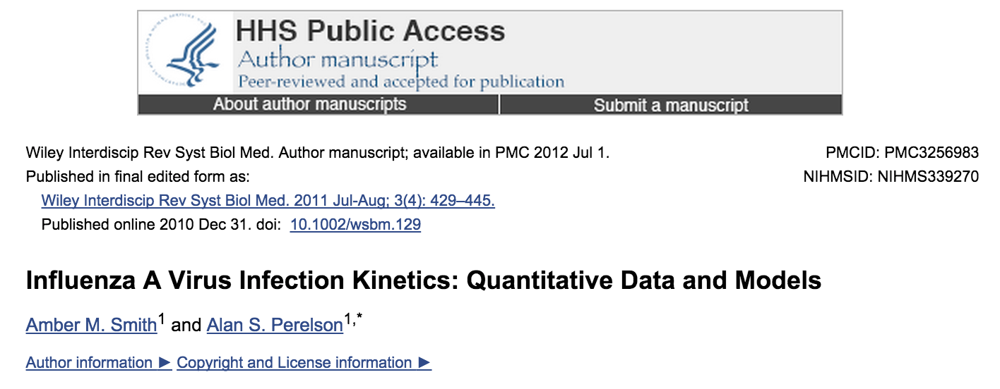
Influenza A kinetics: An example
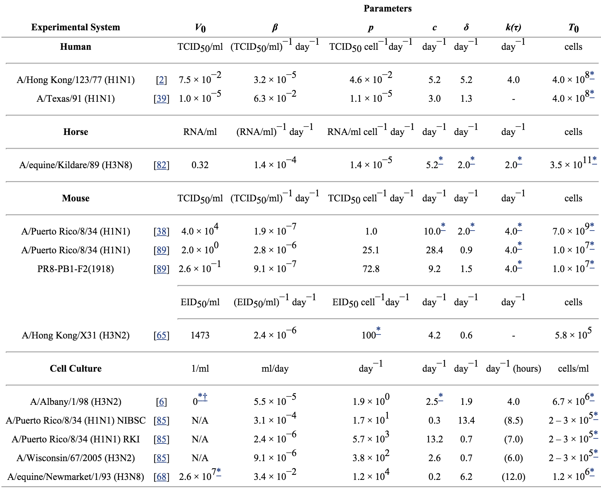
Bridging the individual—population gap
- We have methods for both modeling pathogen kinetics at the individual host level and predicting pathogen spread through a population
- Currently, however, there is nothing linking the two together
- Our epidemic models remain largely ignorant of the kinetics of the relevant pathogen
Our modeling and prediction of epidemic spreads could be greatly aided by the integration of these two now-disparate methods
Generalized Hill functions
Based off of the Hill Equation, a measure of coöperative ligand binding, given by:
\[
\theta = {[L]^n \over K_d + [L]^n} = {[L]^n \over (K_A)^n + [L]^n} = {1 \over ({K_A \over [L]})^n+1}
\]
where \(\theta\) is fraction of the ligand-binding sites on the receptor which are occupied by the ligand, \([L]\) is the concentration of unbound ligand, \(K_{d}\) is the dissociation constant derived from the law of mass action, and \(n\) is the Hill coefficient.
Generalized Hill functions
- Extends the Hill equation with the goal of creating, essentially, an in silico cell
- Allows approximation of kinetic data in the absence of a full characterization of detailed mechanisms of molecular processes
- Importantly, these processes can be nested to build successively more complex models representing higher levels of biological organization
- I.e., molecular \(\rightarrow\) cellular \(\rightarrow\) tissue \(\rightarrow\) organ \(\rightarrow\) organism \(\rightarrow\) population
- Opportunity to tie together two formerly-disparate modeling techniques to improve predictive power in epidemic modeling
Proof-of-concept: M. mungi
- Novel tuberculosis complex pathogen infecting African banded mongoose
- Initially identified in 2000
- Spread as point-source infection between troops living in close association with human dwellings
- In the following decade, 7 outbreaks were observed in mongoose troops in the area
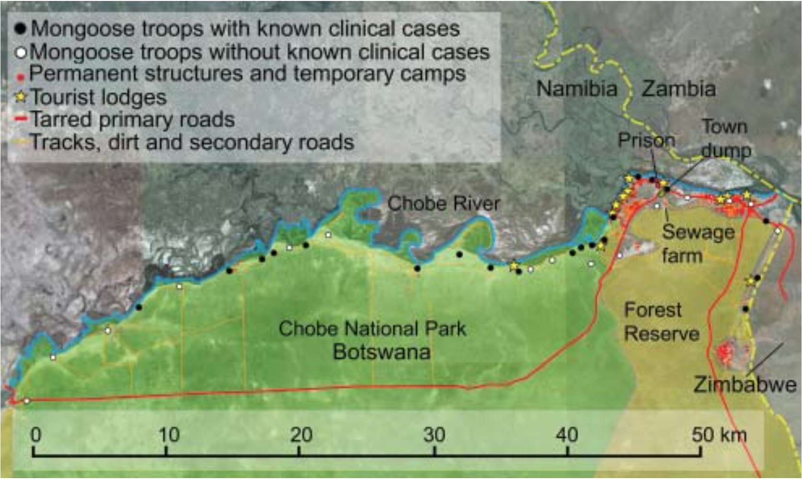
M. mungi
- Analysis of mycobacterial interspersed repetitive unit–variable number tandem repeats and spoligotyping analysis indicate that this is a genotypically-distinct strain of tuberculosis
- Has high rate of mortality in infected mongoose populations
- Can threaten extinction of smaller troops
- Time from clinical presentation to death usually from 2–3 months
- Uniquely transmitted through nasal planum (non-respiratory route of transmission)
Why M. mungi?
- Known to cause regular outbreaks among host population
- Considerable historical data available on species’ social behaviors and previous outbreaks
- Tuberculosis remains a disease of concern in many parts of the world
- Efforts are currently underway to create and validate network models of the disease’s spread in its host population
- I.e., we will be easily able to cross-validate our combined network/molecular models and compare their predictive power to currently-employed methods
Plan of research: Overview
- Establish culture system
- Assemble reference genome for M. mungi
- Estimate relevant parameters (bacterial titer, infection rate constant, death rate of productively infected cells, bacterium release rate per infected cell, etc.) in vitro
- Validate parameter estimates in vivo
- Develop predictive epidemic model based on kinetic data and previous outbreak data
- Cross-validate against future outbreaks or other data not used in model training
- Generalize to other (human?) TB strains or to other pathogens
Plan of research: Cell culture
- To date, M. mungi has not been successfully cultured
- First step is to develop a sound, reproducible protocol for successful culture of this pathogen to enable detailed molecular experiments
- Must ensure that our cell culture system faithfully recapitulates infectious cycle in vivo
Plan of research: Reference genome
- Currently, no reference genome for either the banded mongoose or M. mungi exists
- Characterization of, e.g., differential gene expression patterns at different stages of infection are relevant parameters to include in such a kinetic model
- Additionally, whole-genome analysis may provide additional insight to the novel transmission mechanisms of M. mungi (i.e., no active pulmonary infection)
Plan of research: Parameter estimation
- Utilize in vitro culture and assays to experimentally derive parameter estimates
- These may, for example, include:
- Bacterial titer at time point \(t\)
- Infection rate constant
- Death rate of productively infected cells
- Bacterium release rate per infected cell
- etc.
Plan of research: Parameter validation
- Parameters may be strain- and cell-type-specific
- Some measure of their robustness should be derived to determine the extent to which each parameter can be generalized across strains of tuberculosis and species infected
- Numerous mammals are infected with tuberculosis (cattle, rock hyrax, mongoose, rabbits, ferrets, humans)
- Provides an early-stage check to determine the extent to which we can expect our results to be generalizable across TB strains and host species
Plan of research: Modeling
- Having successfully estimated many of the relevant kinetic parameters, we will seek to:
- Incorporate these, via nested generalized Hill functions, into models that ultimately extend current SIR and related models; and
- Provide better insight into the circulation and spread of disease in a target population during an epidemic, taking into account all relevant population-level and molecular kinetic factors
Plan of research: Validation
- Exhaustive cross-validation (leave-\(p\)-out CV) if possible (i.e., learn and validate \(C_{p}^{n}\) times)
- Impractical for large values of \(n\); may require non-exhaustive cross-validation (e.g., \(k\)-fold CV)
- Establish predictive validity against any future outbreaks
- Compare predictive validity to that of current modeling techniques (e.g., stochastic individual-based model)
Plan of research: Generalization
- Tuberculosis remains a disease of human concern with up to \(\frac{1}{3}\) of the world’s population having been infected
- Accurate monitoring of new infections remains a key objective, given that eradication is unlikely in the near future
- Generalization of this model from mongoose to other species will aid in this goal
- Additionally, we wish to demonstrate the capacity for such models to be developed and refined in cell culture and animal models, and still remain applicable to and informative of the spread of disease in human populations
Deliverables
- Validated proof-of-concept model that accurately describes pathogen movement in an outbreak within a target population
- Preliminary evidence for cross-species and cross-strain generalizability of such an approach
- Evidence of superior predictive power relative to current modeling methods
- A general modeling framework under which other pathogens can easily be characterized and their spread modeled, given periodic or seasonal outbreaks (e.g., influenza) or following the outbreak of a novel pathogen or one that otherwise had not previously caused human epidemic (e.g., ebola)
Potential limitations
- Developing a culture system for this strain of tuberculosis will be challenging: none has been devised in the 15 years since its discovery
- An alternate strain or target pathogen may need to be selected
- Our model may not provide superior predictive power relative to current models
- Failure for one strain of one pathogen does not mean that it cannot be useful
- We will provide a framework for the easy replication, adaptation, and extension of the methods used so that they can be easily improved by other researchers
Conclusions
- Epidemic modeling is an invaluable tool for intelligent mobilization and distribution of resources during an outbreak
- Too often, we see that epidemic models fail to accurately reflect the reality of the pathogen's spread
- Failures in these models can represent catastrophic losses to life and resources
- By incorporating molecular kinetic data, we hope to offer significant improvements to current modeling techniques
- This research will provide a proof-of-concept model that can be extended to other emerging and circulating pathogens that represent a serious risk to human health and safety